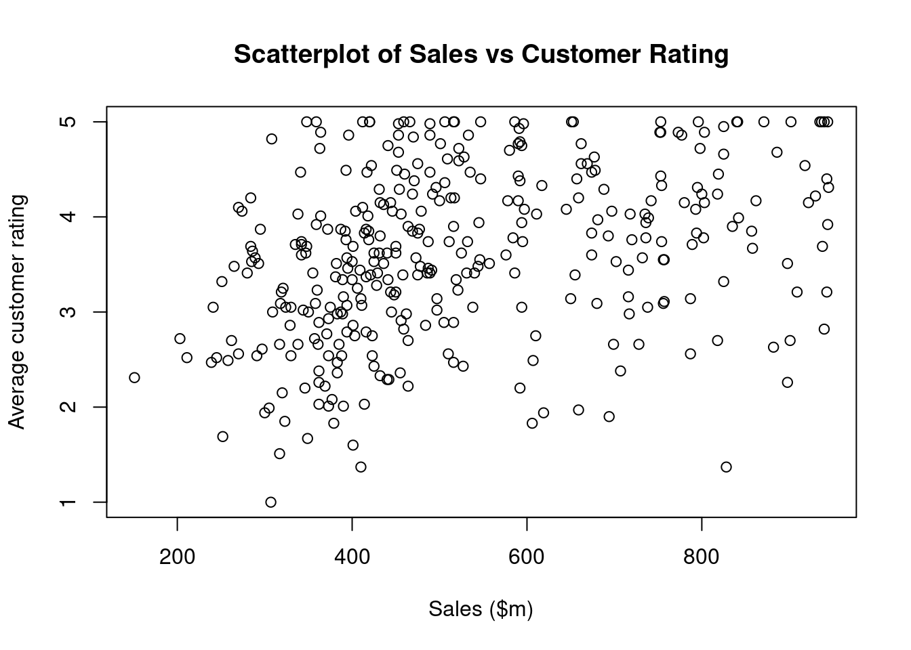
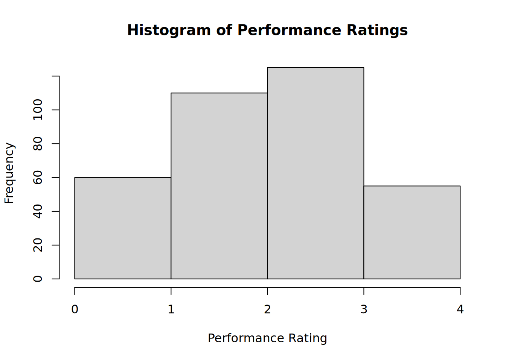

2 The Basics of the R Programming Language
Most of the work in this book is implemented in the R statistical programming language which, along with Python, is one of the two languages that I use in my day-to-day statistical analysis. Sample implementations in Python are also provided at the end of the relevant chapters or sections. I have made efforts to keep the code as simple as possible, and I have tried to avoid the use of too many external packages. For the most part, readers should see (especially in the earlier chapters) that code blocks are short and simple, relying wherever possible on base R functionality. No doubt there are neater and more effective ways to code some of the material in this book using a wide array of R packages, but my priority has been to keep the code simple, consistent and easily reproducible.
For those who wish to follow the method and theory without the implementations in this book, there is no need to read this chapter. However, the style of this book is to use implementation to illustrate theory and practice, and so tolerance of many code blocks will be necessary as you read onward.
For those who wish to simply replicate the models as quickly as possible, they will be able to avail of the code block copying feature, which appears whenever you scroll over an input code block. Assuming all the required external packages have been installed, these code blocks should all be transportable and immediately usable. For those who are extra-inquisitive and want to explore how I constructed graphics used for illustration (for which code is usually not displayed), the best place to go is the Github repository for this book.
This chapter is for those who wish to learn the methods in this book but do not know how to use R. However, it is not intended to be a full tutorial on R. There are many more qualified individuals and existing resources that would better serve that purpose—in particular I recommend Wickham, Grolemund, and Çetinkaya-Rundel (2023). It is recommended that you consult these resources and become comfortable with the basics of R before proceeding into the later chapters of this book. However, acknowledging that many will want to dive in sooner rather than later, this chapter covers the absolute basics of R that will allow the uninitiated reader to proceed with at least some orientation.
2.1 What is R?
R is a programming language that was originally developed by and for statisticians, but in recent years its capabilities and the environments in which it is used have expanded greatly, with extensive use nowadays in academia and the public and private sectors. There are many advantages to using a programming language like R. Here are some:
- It is completely free and open source.
- It is faster and more efficient with memory than popular graphical user interface analytics tools.
- It facilitates easier replication of analysis from person to person compared with many alternatives.
- It has a large and growing global community of active users.
- It has a large and rapidly growing universe of packages, which are all free and which provide the ability to do an extremely wide range of general and highly specialized tasks, statistical and otherwise.
There is often heated debate about which tools are better for doing non-trivial statistical analysis. I personally find that R provides the widest array of resources for those interested in inferential modeling, while Python has a more well-developed toolkit for predictive modeling and machine learning. Since the primary focus of this book is inferential modeling, the in-depth walkthroughs are coded in R.
2.2 How to start using R
Just like most programming languages, R itself is an interpreter which receives input and returns output. It is not very easy to use without an IDE. An IDE is an Integrated Development Environment, which is a convenient user interface allowing an R programmer to do all their main tasks including writing and running R code, saving files, viewing data and plots, integrating code into documents and many other things. By far the most popular IDE for R is RStudio. An example of what the RStudio IDE looks like can be seen in Figure 2.1.
To start using R, follow these steps:
- Download and install the latest version of R from https://www.r-project.org/. Ensure that the version suits your operating system.
- Download the latest version of the RStudio Desktop IDE from https://posit.co/download/rstudio-desktop/. Consult the user guide at https://docs.posit.co/ide/user/ to help orient yourself to the features of RStudio.
- Open RStudio and play around.
The initial stages of using R can be challenging, mostly due to the need to become familiar with how R understands, stores and processes data. Extensive trial and error is a learning necessity. Perseverance is important in these early stages, as well as an openness to seek help from others either in person or via online forums. Try not to rely too much on Generative AI tools for help, as they can often lead to you missing important learning steps, and they can also generate error-prone code.
2.3 Data in R
As you start to do tasks involving data in R, you will generally want to store the things you create so that you can refer to them later. Simply calculating something does not store it in R. For example, a simple calculation like this can be performed easily:
3 + 3[1] 6However, as soon as the calculation is complete, it is forgotten by R because the result hasn’t been assigned anywhere. To store something in your R session, you will assign it a name using the <- operator. So I can assign my previous calculation to an object called my_sum, and this allows me to access the value at any time.
# store the result
my_sum <- 3 + 3
# now I can work with it
my_sum + 3[1] 9You will see above that you can comment your code by simply adding a # to the start of a line to ensure that the line is ignored by the interpreter.
Note that assignment to an object does not result in the value being displayed. To display the value, the name of the object must be typed, the print() command used or the command should be wrapped in parentheses.
# show me the value of my_sum
my_sum[1] 6# assign my_sum + 3 to new_sum and show its value
(new_sum <- my_sum + 3)[1] 92.3.1 Data types
All data in R has an associated type, to reflect the wide range of data that R is able to work with. The typeof() function can be used to see the type of a single scalar value. Let’s look at the most common scalar data types.
Numeric data can be in integer form or double (decimal) form.
# integers can be signified by adding an 'L' to the end
my_integer <- 1L
my_double <- 6.38
typeof(my_integer)[1] "integer"typeof(my_double)[1] "double"Character data is text data surrounded by single or double quotes.
my_character <- "THIS IS TEXT"
typeof(my_character)[1] "character"Logical data takes the form TRUE or FALSE.
my_logical <- TRUE
typeof(my_logical)[1] "logical"2.3.2 Homogeneous data structures
Vectors are one-dimensional structures containing data of the same type and are notated by using c(). The type of the vector can also be viewed using the typeof() function, but the str() function can be used to display both the contents of the vector and its type.
my_double_vector <- c(2.3, 6.8, 4.5, 65, 6)
str(my_double_vector) num [1:5] 2.3 6.8 4.5 65 6Categorical data—which takes only a finite number of possible values—can be stored as a factor vector to make it easier to perform grouping and manipulation.
categories <- factor(
c("A", "B", "C", "A", "C")
)
str(categories) Factor w/ 3 levels "A","B","C": 1 2 3 1 3If needed, the factors can be given order.
# character vector
ranking <- c("Medium", "High", "Low")
str(ranking) chr [1:3] "Medium" "High" "Low"# turn it into an ordered factor
ranking_factors <- ordered(
ranking, levels = c("Low", "Medium", "High")
)
str(ranking_factors) Ord.factor w/ 3 levels "Low"<"Medium"<..: 2 3 1The number of elements in a vector can be seen using the length() function.
length(categories)[1] 5Simple numeric sequence vectors can be created using shorthand notation.
(my_sequence <- 1:10) [1] 1 2 3 4 5 6 7 8 9 10If you try to mix data types inside a vector, it will usually result in type coercion, where one or more of the types are forced into a different type to ensure homogeneity. Often this means the vector will become a character vector.
# numeric sequence vector
vec <- 1:5
str(vec) int [1:5] 1 2 3 4 5# create a new vector containing vec and the character "hello"
new_vec <- c(vec, "hello")
# numeric values have been coerced into their character equivalents
str(new_vec) chr [1:6] "1" "2" "3" "4" "5" "hello"But sometimes logical or factor types will be coerced to numeric.
# attempt a mixed logical and numeric
mix <- c(TRUE, 6)
# logical has been converted to binary numeric (TRUE = 1)
str(mix) num [1:2] 1 6# try to add a numeric to our previous categories factor vector
new_categories <- c(categories, 1)
# categories have been coerced to background integer representations
str(new_categories) num [1:6] 1 2 3 1 3 1Matrices are two-dimensional data structures of the same type and are built from a vector by defining the number of rows and columns. Data is read into the matrix down the columns, starting left and moving right. Matrices are rarely used for non-numeric data types.
# create a 2x2 matrix with the first four integers
(m <- matrix(c(1, 2, 3, 4), nrow = 2, ncol = 2)) [,1] [,2]
[1,] 1 3
[2,] 2 4Arrays are n-dimensional data structures with the same data type and are not used extensively by most R users.
2.3.3 Heterogeneous data structures
Lists are one-dimensional data structures that can take data of any type.
my_list <- list(6, TRUE, "hello")
str(my_list)List of 3
$ : num 6
$ : logi TRUE
$ : chr "hello"List elements can be any data type and any dimension. Each element can be given a name.
new_list <- list(
scalar = 6,
vector = c("Hello", "Goodbye"),
matrix = matrix(1:4, nrow = 2, ncol = 2)
)
str(new_list)List of 3
$ scalar: num 6
$ vector: chr [1:2] "Hello" "Goodbye"
$ matrix: int [1:2, 1:2] 1 2 3 4Named list elements can be accessed by using $.
new_list$matrix [,1] [,2]
[1,] 1 3
[2,] 2 4Dataframes are the most used data structure in R; they are effectively a named list of vectors of the same length, with each vector as a column. As such, a dataframe is very similar in nature to a typical database table or spreadsheet.
# two vectors of different types but same length
names <- c("John", "Ayesha")
ages <- c(31, 24)
# create a dataframe
(df <- data.frame(names, ages)) names ages
1 John 31
2 Ayesha 24# get types of columns
str(df)'data.frame': 2 obs. of 2 variables:
$ names: chr "John" "Ayesha"
$ ages : num 31 24# get dimensions of df
dim(df)[1] 2 22.4 Working with dataframes
The dataframe is the most common data structure used by analysts in R, due to its similarity to data tables found in databases and spreadsheets. We will work almost entirely with dataframes in this book, so let’s get to know them.
2.4.1 Loading and tidying data in dataframes
To work with data in R, you usually need to pull it in from an outside source into a dataframe1. R facilitates numerous ways of importing data from simple .csv files, from Excel files, from online sources or from databases. Let’s load a data set that we will use later—the salespeople data set, which contains some information on the sales, average customer ratings and performance ratings of salespeople. The read.csv() function can accept a URL address of the file if it is online.
# url of data set
url <- "http://peopleanalytics-regression-book.org/data/salespeople.csv"
# load the data set and store it as a dataframe called salespeople
salespeople <- read.csv(url)We might not want to display this entire data set before knowing how big it is. We can view the dimensions, and if it is too big to display, we can use the head() function to display just the first few rows.
dim(salespeople)[1] 351 4# hundreds of rows, so view first few
head(salespeople) promoted sales customer_rate performance
1 0 594 3.94 2
2 0 446 4.06 3
3 1 674 3.83 4
4 0 525 3.62 2
5 1 657 4.40 3
6 1 918 4.54 2We can view a specific column by using $, and we can use square brackets to view a specific entry. For example if we wanted to see the 6th entry of the sales column:
salespeople$sales[6][1] 918Alternatively, we can use a [row, column] index to get a specific entry in the dataframe.
salespeople[34, 4][1] 3We can take a look at the data types using str().
str(salespeople)'data.frame': 351 obs. of 4 variables:
$ promoted : int 0 0 1 0 1 1 0 0 0 0 ...
$ sales : int 594 446 674 525 657 918 318 364 342 387 ...
$ customer_rate: num 3.94 4.06 3.83 3.62 4.4 4.54 3.09 4.89 3.74 3 ...
$ performance : int 2 3 4 2 3 2 3 1 3 3 ...We can also see a statistical summary of each column using summary(), which tells us various statistics depending on the type of the column.
summary(salespeople) promoted sales customer_rate performance
Min. :0.0000 Min. :151.0 Min. :1.000 Min. :1.0
1st Qu.:0.0000 1st Qu.:389.2 1st Qu.:3.000 1st Qu.:2.0
Median :0.0000 Median :475.0 Median :3.620 Median :3.0
Mean :0.3219 Mean :527.0 Mean :3.608 Mean :2.5
3rd Qu.:1.0000 3rd Qu.:667.2 3rd Qu.:4.290 3rd Qu.:3.0
Max. :1.0000 Max. :945.0 Max. :5.000 Max. :4.0
NA's :1 NA's :1 NA's :1 Note that there is missing data in this dataframe, indicated by NAs in the summary. Missing data is identified by a special NA value in R. This should not be confused with "NA", which is simply a character string. The function is.na() will look at all values in a vector or dataframe and return TRUE or FALSE based on whether they are NA or not. By adding these up using the sum() function, it will take TRUE as 1 and FALSE as 0, which effectively provides a count of missing data.
sum(is.na(salespeople))[1] 3This is a small number of NAs given the dimensions of our data set and we might want to remove the rows of data that contain NAs. The easiest way is to use the complete.cases() function, which identifies the rows that have no NAs, and then we can select those rows from the dataframe based on that condition. Note that you can overwrite objects with the same name in R.
salespeople <- salespeople[complete.cases(salespeople), ]
# confirm no NAs
sum(is.na(salespeople))[1] 0We can see the unique values of a vector or column using the unique() function.
unique(salespeople$performance)[1] 2 3 4 1If we need to change the type of a column in a dataframe, we can use the as.numeric(), as.character(), as.logical() or as.factor() functions. For example, given that there are only four unique values for the performance column, we may want to convert it to a factor.
salespeople$performance <- as.factor(salespeople$performance)
str(salespeople)'data.frame': 350 obs. of 4 variables:
$ promoted : int 0 0 1 0 1 1 0 0 0 0 ...
$ sales : int 594 446 674 525 657 918 318 364 342 387 ...
$ customer_rate: num 3.94 4.06 3.83 3.62 4.4 4.54 3.09 4.89 3.74 3 ...
$ performance : Factor w/ 4 levels "1","2","3","4": 2 3 4 2 3 2 3 1 3 3 ...2.4.2 Manipulating dataframes
Dataframes can be subsetted to contain only rows that satisfy specific conditions.
(sales_720 <- subset(salespeople, subset = sales == 720)) promoted sales customer_rate performance
290 1 720 3.76 3Note the use of ==, which is used in many programming languages, to test for precise equality. Similarly we can select columns based on inequalities (> for ‘greater than’, < for ‘less than’, >= for ‘greater than or equal to’, <= for ‘less than or equal to’, or != for ‘not equal to’). For example:
high_sales <- subset(salespeople, subset = sales >= 700)
head(high_sales) promoted sales customer_rate performance
6 1 918 4.54 2
12 1 716 3.16 3
20 1 937 5.00 2
21 1 702 3.53 4
25 1 819 4.45 2
26 1 736 3.94 4To select specific columns use the select argument.
salespeople_sales_perf <- subset(salespeople,
select = c("sales", "performance"))
head(salespeople_sales_perf) sales performance
1 594 2
2 446 3
3 674 4
4 525 2
5 657 3
6 918 2Two dataframes with the same column names can be combined by their rows.
low_sales <- subset(salespeople, subset = sales < 400)
# bind the rows of low_sales and high_sales together
low_and_high_sales = rbind(low_sales, high_sales)
head(low_and_high_sales) promoted sales customer_rate performance
7 0 318 3.09 3
8 0 364 4.89 1
9 0 342 3.74 3
10 0 387 3.00 3
15 0 344 3.02 2
16 0 372 3.87 3Two dataframes with different column names can be combined by their columns.
# two dataframes with two columns each
sales_perf <- subset(salespeople,
select = c("sales", "performance"))
prom_custrate <- subset(salespeople,
select = c("promoted", "customer_rate"))
# bind the columns to create a dataframe with four columns
full_df <- cbind(sales_perf, prom_custrate)
head(full_df) sales performance promoted customer_rate
1 594 2 0 3.94
2 446 3 0 4.06
3 674 4 1 3.83
4 525 2 0 3.62
5 657 3 1 4.40
6 918 2 1 4.542.5 Functions, packages and libraries
In the code so far we have used a variety of functions. For example head(), subset(), rbind(). Functions are operations that take certain defined inputs and return an output. Functions exist to perform common useful operations.
2.5.1 Using functions
Functions usually take one or more arguments. Often there are a large number of arguments that a function can take, but many are optional and not required to be specified by the user. For example, the function head(), which displays the first rows of a dataframe2, has only one required argument x: the name of the dataframe. A second argument is optional, n: the number of rows to display. If n is not entered, it is assumed to have the default value n = 6.
When running a function, you can either specify the arguments by name or you can enter them in order without their names. If you enter arguments without naming them, R expects the arguments to be entered in exactly the right order.
# see the head of salespeople, with the default of six rows
head(salespeople) promoted sales customer_rate performance
1 0 594 3.94 2
2 0 446 4.06 3
3 1 674 3.83 4
4 0 525 3.62 2
5 1 657 4.40 3
6 1 918 4.54 2# see fewer rows - arguments need to be in the right order if not named
head(salespeople, 3) promoted sales customer_rate performance
1 0 594 3.94 2
2 0 446 4.06 3
3 1 674 3.83 4# or if you don't know the right order,
# name your arguments and you can put them in any order
head(n = 3, x = salespeople) promoted sales customer_rate performance
1 0 594 3.94 2
2 0 446 4.06 3
3 1 674 3.83 42.5.2 Help with functions
Most functions in R have excellent help documentation. To get help on the head() function, type help(head) or ?head. This will display the results in the Help browser window in RStudio. Alternatively you can open the Help browser window directly in RStudio and do a search there. An example of the browser results for head() is in Figure 2.2.

head() function in the RStudio Help browser
The help page normally shows the following:
- Description of the purpose of the function
- Usage examples, so you can quickly see how it is used
- Arguments list so you can see the names and order of arguments
- Details or notes on further considerations on use
- Expected value of the output (for example
head()is expected to return a similar object to its first inputx) - Examples to help orient you further (sometimes examples can be very abstract in nature and not so helpful to users)
2.5.3 Writing your own functions
Functions are not limited to those that come packaged in R. Users can write their own functions to perform tasks that are helpful to their objectives. Experienced programmers in most languages subscribe to a principle called DRY (Don’t Repeat Yourself). Whenever a task needs to be done repeatedly, it is poor practice to write the same code numerous times. It makes more sense to write a function to do the task.
In this example, a simple function is written which generates a report on a dataframe:
# create df_report function
df_report <- function(df) {
paste("This dataframe contains", nrow(df), "rows and",
ncol(df), "columns. There are", sum(is.na(df)), "NA entries.")
}We can test our function by using the built-in mtcars data set in R.
df_report(mtcars)[1] "This dataframe contains 32 rows and 11 columns. There are 0 NA entries."2.5.4 Installing packages
All the common functions that we have used so far exist in the base R installation. However, the beauty of open source languages like R is that users can write their own functions or resources and release them to others via packages. A package is an additional module that can be installed easily; it makes resources available which are not in the base R installation. In this book we will be using functions from both base R and from popular and useful packages. As an example, a popular package used for statistical modeling is the MASS package, which is based on methods in a popular applied statistics book3.
Before an external package can be used, it must be installed into your package library using install.packages(). So to install MASS, type install.packages("MASS") into the console. This will send R to the main internet repository for R packages (known as CRAN). It will find the right version of MASS for your operating system and download and install it into your package library. If MASS needs other packages in order to work, it will also install these packages.
If you want to install more than one package, put the names of the packages inside a character vector—for example:
my_packages <- c("MASS", "DescTools", "dplyr")
install.packages(my_packages)Once you have installed a package, you can see what functions are available by calling for help on it, for example using help(package = MASS). One package you may wish to install now is the peopleanalyticsdata package, which contains all the data sets used in this book. By installing and loading this package, all the data sets used in this book will be loaded into your R session and ready to work with. If you do this, you can ignore the read.csv() commands later in the book, which download the data from the internet.
2.5.5 Using packages
Once you have installed a package into your package library, to use it in your R session you need to load it using the library() function. For example, to load MASS after installing it, use library(MASS). Often nothing will happen when you use this command, but rest assured the package has been loaded and you can start to use the functions inside it. Sometimes when you load the package a series of messages will display, usually to make you aware of certain things that you need to keep in mind when using the package. Note that whenever you see the library() command in this book, it is assumed that you have already installed the package in that command. If you have not, the library() command will fail.
Once a package is loaded from your library, you can use any of the functions inside it. For example, the stepAIC() function is not available before you load the MASS package but becomes available after it is loaded. In this sense, functions ‘belong’ to packages.
Problems can occur when you load packages that contain functions with the same name as functions that already exist in your R session. Often the messages you see when loading a package will alert you to this. When R is faced with a situation where a function exists in multiple packages you have loaded, R always defaults to the function in the most recently loaded package. This may not always be what you intended.
One way to completely avoid this issue is to get in the habit of namespacing your functions. To namespace, you simply use package::function(), so to safely call stepAIC() from MASS, you use MASS::stepAIC(). Most of the time in this book when a function is being called from a package outside base R, I use namespacing to call that function. This should help avoid confusion about which packages are being used for which functions.
2.5.6 The pipe operator
Even in the most elementary briefing about R, it is very difficult to ignore the pipe operator. The pipe operator makes code more natural to read and write and reduces the typical computing problem of many nested operations inside parentheses.
As an example, imagine we wanted to do the following two operations in one command:
- Subset
salespeopleto only thesalesvalues of those withsalesless than 500 - Take the mean of those values
In base R, one way to do this is:
mean(subset(salespeople$sales, subset = salespeople$sales < 500))[1] 388.6684This is nested and needs to be read from the inside out in order to align with the instructions. The pipe operator |> takes the command that comes before it and places it inside the function that follows it (by default as the first argument). This reduces complexity and allows you to follow the logic more clearly.
# use the pipe operator to lay out the steps more logically
subset(salespeople$sales, subset = salespeople$sales < 500) |>
mean() [1] 388.6684This can be extended to perform arbitrarily many operations in one piped command.
salespeople$sales |> # start with all data
subset(subset = salespeople$sales < 500) |> # get the subsetted data
mean() |> # take the mean value
round() # round to the nearest integer[1] 389The pipe operator is unique to R and is very widely used because it helps to make code more readable, it reduces complexity, and it helps orient around a common ‘grammar’ for the manipulation of data. The pipe operator helps you structure your code more clearly around nouns (objects), verbs (functions) and adverbs (arguments of functions). One of the most developed sets of packages in R that follows these principles is the tidyverse family of packages, which I encourage you to explore.
2.6 Errors, warnings and messages
As I mentioned earlier in this chapter, getting familiar with R can be frustrating at the beginning if you have never programmed before. You can expect to regularly see messages, warnings or errors in response to your commands. I encourage you to regard these as your friend rather than your enemy. It is very tempting to take the latter approach when you are starting out, but over time I hope you will appreciate some wisdom from my words.
Errors are serious problems which usually result in the halting of your code and a failure to return your requested output. They usually come with an indication of the source of the error, and these can sometimes be easy to understand and sometimes frustratingly vague and abstract. For example, an easy-to-understand error is:
subset(salespeople, subset = sales = 720)Error: unexpected '=' in "subset(salespeople, subset = sales ="This helps you see that you have used sales = 720 as a condition to subset your data, when you should have used sales == 720 for precise equality.
A much more challenging error to understand is:
head[salespeople]Error in head[salespeople] : object of type 'closure' is not subsettableWhen first faced with an error that you can’t understand, try not to get frustrated and proceed in the knowledge that it usually can be fixed easily and quickly. Often the problem is much more obvious than you think, and if not, there is still a 99% likelihood that others have made this error and you can read about it online. The first step is to take a look at your code to see if you can spot what you did wrong. In this case, you may see that you have used square brackets [] instead of parentheses () when calling your head() function. If you cannot see what is wrong, the next steps are to ask a colleague, do an internet search with the text of the error message you receive, ask a Generative AI coding assistant or consult online forums like https://stackoverflow.com. The more experienced you become, the easier it is to interpret error messages.
Warnings are less serious and usually alert you to something that you might be overlooking and which could indicate a problem with the output. In many cases you can ignore warnings, but sometimes they are an important reminder to go back and edit your code. For example, you may run a model which doesn’t converge, and while this does not stop R from returning results, it is also very useful for you to know that it didn’t converge.
Messages are pieces of information that may or may not be useful to you at a particular point in time. Sometimes you will receive messages when you load a package from your library. Sometimes messages will keep you up to date on the progress of a process that is taking a long time to execute.
2.7 Plotting and graphing
As you might expect in a well-developed programming language, there are numerous ways to plot and graph information in R. If you are doing exploratory data analysis on fairly simple data and you don’t need to worry about pretty appearance or formatting, the built-in plot capabilities of base R are fine. If you need a pretty appearance, more precision, color coding or even 3D graphics or animation, there are also specialized plotting and graphing packages for these purposes. In general when working interactively in RStudio, graphical output will be rendered in the Plots pane, where you can copy it or save it as an image.
2.7.1 Plotting in base R
The simplest plot function in base R is plot(). This performs basic X-Y plotting. As an example, this code will generate a scatter plot of customer_rate against sales in the salespeople data set, with the results displayed in Figure 2.3. Note the use of the arguments main, xlab and ylab for customizing the axis labels and title for the plot.
# scatter plot of customer_rate against sales
plot(x = salespeople$sales, y = salespeople$customer_rate,
xlab = "Sales ($m)", ylab = "Average customer rating",
main = "Scatterplot of Sales vs Customer Rating")
customer_rate against sales in the salespeople data set
Histograms of data can be generated using the hist() function. This command will generate a histogram of performance as displayed in Figure 2.4. Note the use of breaks to customize how the bars appear.
# convert performance ratings back to numeric data type for histogram
salespeople$performance <- as.numeric(salespeople$performance)
# histogram of performance ratings
hist(salespeople$performance, breaks = 0:4,
xlab = "Performance Rating",
main = "Histogram of Performance Ratings")
performance in the salespeople data set
Box and whisker plots are excellent ways to see the distribution of a variable, and can be grouped against another variable to see bivariate patterns. For example, this command will show a box and whisker plot of sales grouped against performance, with the output shown in Figure 2.5. Note the use of the formula and data notation here to define the variable we are interested in and how we want it grouped. We will study this formula notation in greater depth later in this book.
# box plot of sales by performance rating
boxplot(formula = sales ~ performance, data = salespeople,
xlab = "Performance Rating", ylab = "Sales ($m)",
main = "Boxplot of Sales by Performance Rating")
sales grouped against performance in the salespeople data set
These are among the most common plots used for data exploration purposes. They are examples of a wider range of plotting and graphing functions available in base R, such as line plots, bar plots and other varieties which you may see later in this book.
2.7.2 Specialist plotting and graphing packages
By far the most commonly used specialist plotting and graphing package in R is ggplot2. ggplot2 allows the flexible construction of a very wide range of charts and graphs, but uses a very specific command grammar which can take some getting used to. However, once learned, ggplot2 can be an extremely powerful tool. Many of the illustratory figures used in this book are developed using ggplot2 and while the code for these figures is generally not included for the sake of brevity, you can always find it in the source code of this book on Github4. A great learning resource for ggplot2 is Wickham, Navarro, and Pedersen (2023).
The plotly package allows the use of the plotly graphing library in R. This is an excellent package for interactive graphing and is used for 3D illustrations in this book. Output can be rendered in HTML—allowing the user to play with and explore the graphs interactively—or can be saved as static 2D images.
GGally is a package that extends ggplot2 to allow easy combination of charts and graphs. This is particularly valuable for quicker exploratory data analysis. One of its most popular functions is ggpairs(), which produces a pairplot. A pairplot is a visualization of all univariate and bivariate patterns in a data set, with univariate distributions in the diagonal and bivariate relationships or correlations displayed in the off-diagonal. Figure 2.6 is an example of a pairplot for the salespeople data set, which we will explore further in Chapter 5.
library(GGally)
# convert performance and promotion to categorical
salespeople$promoted <- as.factor(salespeople$promoted)
salespeople$performance <- as.factor(salespeople$performance)
# pairplot of salespeople
GGally::ggpairs(salespeople)
salespeople data set
2.8 Documenting your work using Quarto
For anyone performing any sort of multivariable analysis using a statistical programming language, appropriate documentation and reproducibility of the work is essential to its success and longevity. If your code is not easily obtained or run by others, it is likely to have a very limited impact and lifetime. Learning how to create integrated documents that contain both text and code is critical to providing access to your code and narration of your work.
Quarto is a package which allows you to create integrated documents containing both formatted text and executed code. It is, in my opinion, one of the best resources available currently for this purpose. This entire book has been created using Quarto. You can start a Quarto document in RStudio by installing the by opening a new Quarto document file, which will have the suffix .qmd.
Quarto documents always start with a particular heading type called a YAML header, which contains overall information on the document you are creating. Care must be taken with the precise formatting of the YAML header, as it is sensitive to spacing and indentation. Usually a basic YAML header is created for you in RStudio when you start a new .qmd file. Here is an example.
---
title: "My new document"
author: "Keith McNulty"
date: 2025-11-10
format: html
---The format part of this header has numerous options, but the most commonly used are html, which generates your document as a web page, and pdf, which generates your document as a PDF using the open source LaTeX software package. If you wish to create PDF documents you will need to have a version of LaTeX installed on your system. Running the system command quarto install tinytex will install a minimal version of LaTeX which is fine for most purposes.
Quarto allows you to build a formatted document using many shorthand formatting commands. Here are a few examples of how to format headings and place web links or images in your document:
# My top heading
This section is about this general topic.
## My first sub heading
To see more information on this sub-topic visit [here](https://my.web.link).
## My second sub heading
Here is a nice picture about this sub-topic.
Code can be written and executed and the results displayed inline using backticks. For example, writing
`{r} nrow(salespeople)`inline will display 351 in the final document. Entire code blocks can be included and executed by using triple-backticks. The following code block:
```{r}
# show the first few rows of salespeople
head(salespeople)
```will display this output:
promoted sales customer_rate performance
1 0 594 3.94 2
2 0 446 4.06 3
3 1 674 3.83 4
4 0 525 3.62 2
5 1 657 4.40 3
6 1 918 4.54 2The {} wrapping allows you to specify different languages for your code chunk. For example, if you wanted to run Python code instead of R code you can use {python}.
You can set options for your code chunks inside a code block by starting your line with #|. For example, if you want the results of your code to be displayed, but without the code itself being displayed, you can start your code block with the line #| echo: false.
The process of compiling your Quarto code to produce a document is known as ‘rendering’. To create a rendered document, you simply need to click on the ‘Render’ button in RStudio that appears above your Quarto code.
If you are not familiar with Quarto, I strongly encourage you to learn it alongside R and to challenge yourself to write up any practice exercises you take on in this book using Quarto. You can find a really helpful and thorough user guide for Quarto at https://quarto.org/.
2.9 Learning exercises
2.9.1 Discussion questions
- Describe the following data types: numeric, character, logical, factor.
- Why is a vector known as a homogeneous data structure?
- Give an example of a heterogeneous data structure in R.
- What is the difference between
NAand"NA"? - What operator is used to return named elements of a list and named columns of a dataframe?
- Describe some functions that are used to manipulate dataframes.
- What is a package and how do you install and use a new package?
- Describe what is meant by ‘namespacing’ and why it might be useful.
- What is the pipe operator, and why is it popular in R?
- What is the difference between an error and a warning in R?
- Name some simple plotting functions in base R.
- Name some common specialist plotting and graphing packages in R.
- What is Quarto, and why is it useful to someone performing analysis using programming languages?
2.9.2 Data exercises
- Create a character vector called
my_namesthat contains all your first, middle and last names as elements. Calculate the length ofmy_names. - Create a second numeric vector called
whichwhich corresponds tomy_names. The entries should be the position of each name in the order of your full name. Verify that it has the same length asmy_names. - Create a dataframe called
names, which consists of the two vectorsmy_namesandwhichas columns. Calculate the dimensions ofnames. - Create a new dataframe
new_nameswith thewhichcolumn converted to character type. Verify that your command worked usingstr(). - Load the
ugtestsdata set via thepeopleanalyticsdatapackage or download it from the internet5. Calculate the dimensions ofugtestsand view the first three rows only. - View a statistical summary of all of the columns of
ugtests. Determine if there are any missing values. - View the subset of
ugtestsfor values ofYr1greater than 50. - Install and load the package
dplyr. Look up the help for thefilter()function in this package and try to use it to repeat the task in the previous question. - Write code to find the mean of the
Yr1test scores for all those who achievedYr3test scores greater than 100. Round this mean to the nearest integer. - Familiarize yourself with the two functions
filter()andpull()fromdplyr. Use these functions to try to do the same calculation in the previous question using a single unbroken piped command. Be sure to namespace where necessary. - Create a scatter plot using the
ugtestsdata withFinalscores on the \(y\) axis andYr3scores on the \(x\) axis. - Create your own 5-level grading logic and use it to create a new
finalgradecolumn in theugtestsdata set with grades 1–5 of increasing attainment based on theFinalscore inugtests. Generate a histogram of thisfinalgradecolumn. - Using your new
ugtestsdata with the extra column from the previous exercise, create a box plot ofYr3scores grouped byfinalgrade. - Render all of your answers to these exercises into a Quarto document. Create one version that displays your code and answers, and another that just displays the answers.
R also has some built-in data sets for testing and playing with. For example, check out
mtcarsby typing it into the terminal, or typedata()to see a full list of built-in data sets.↩︎It actually has a broader definition but is mostly used for showing the first rows of a dataframe.↩︎
https://github.com/keithmcnulty/peopleanalytics-regression-book↩︎
http://peopleanalytics-regression-book.org/data/ugtests.csv↩︎